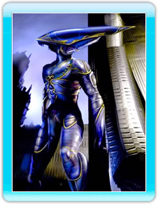

7 |
Los personajes |
 |
|
MDK™2 te permite tomar el control de tres personajes completamente diferentes durante el transcurso del juego. Cada personaje tiene ciertas características y habilidades exclusivas que le diferencian de sus camaradas.

Kurt Hectic, el personaje principal del MDK original, es un héroe a la fuerza, maldecido por el destino. En su día un simple ayudante y conserje del Dr. Hawkins, Kurt fue elegido para ponerse el famoso "traje de anillos" y defender la Tierra de la invasión de los alienígenas de las corrientes energéticas. El traje de anillos fue diseñado por el doctor Fluke Hawkins para servir tanto como una poderosa arma como de indumentaria nocturna a la última moda. Este traje proporciona a Kurt una serie de habilidades especiales, entre las que están la mira telescópica, que puede usar para disparar a enemigos situados a un kilómetro y medio, el paracaídas de goma, que puede transportarle silenciosamente, cubriendo largas distancias, y una devastadora ametralladora multitubo. Kurt usa a regañadientes estas armas para defender la Tierra.

Max es la creación robótica del Dr. Fluke Hawkins. Su inusual aspecto (dos piernas y cuatro brazos) le permite sostener hasta cuatro armas a la vez. En su día bastante domesticado, Max fue desarrollando una personalidad de héroe curtido para ayudar a defender la Tierra contra los alienígenas de las corrientes energéticas.

El doctor Fluke Hawkins es el afamado e irascible genio responsable tanto de la creación de Max como del desarrollo del "traje de anillos". Como personaje del juego, el Dr. Hawkins es el más extraño: su debilidad física sólo es equiparable a su ingenuidad. |
 |
 |
 |